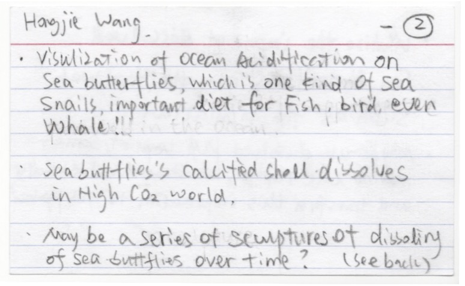
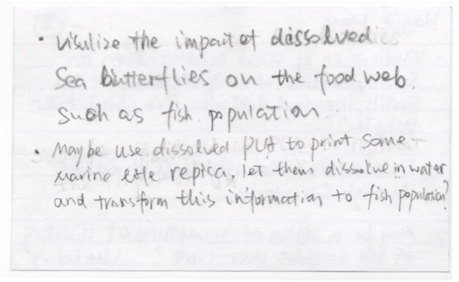
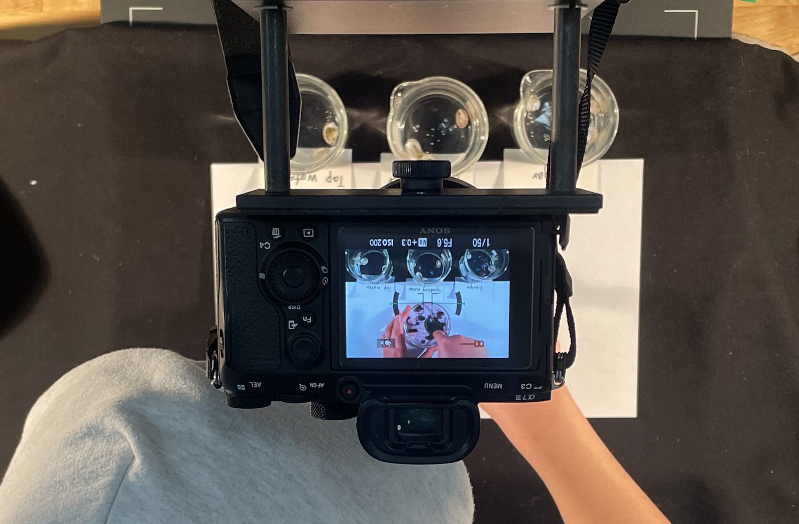
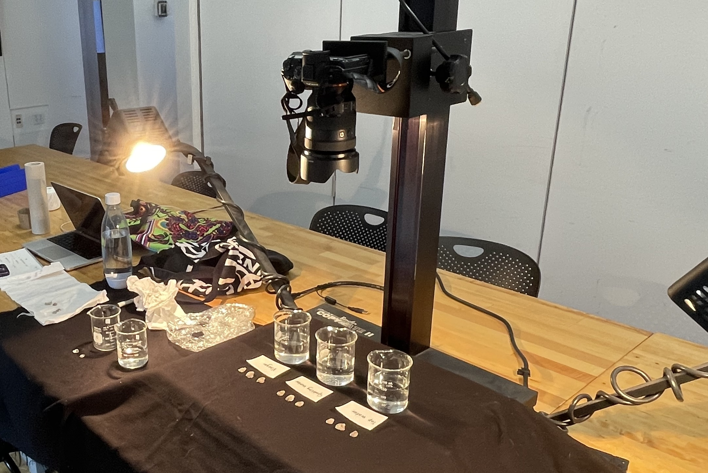
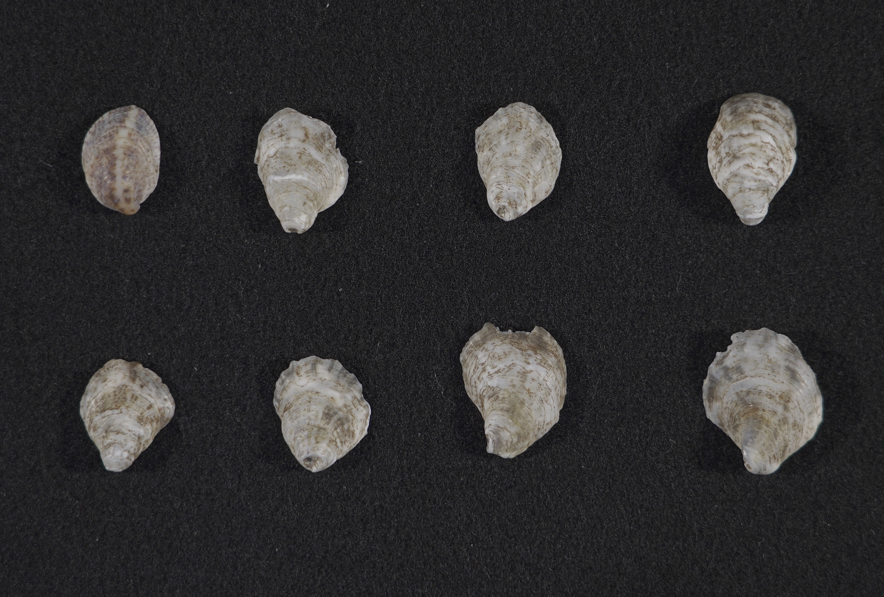
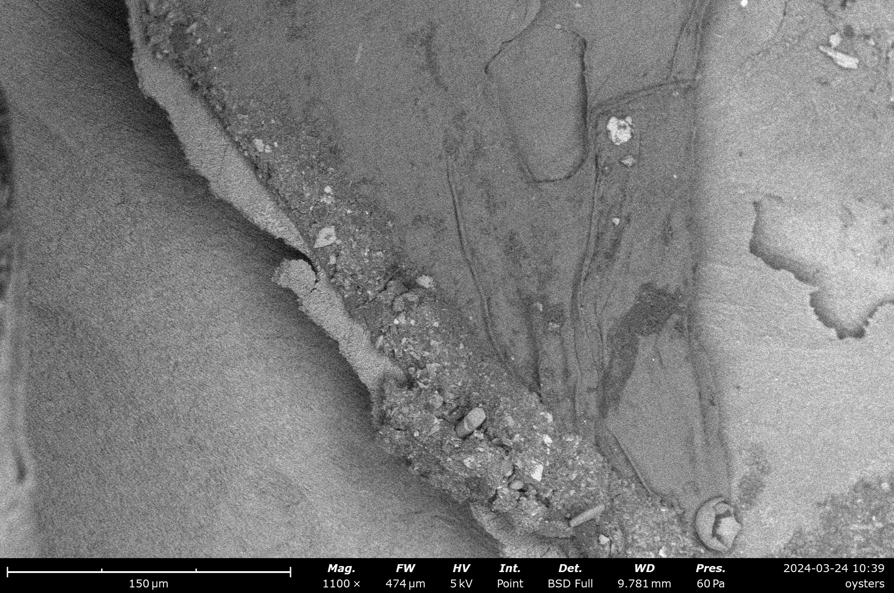
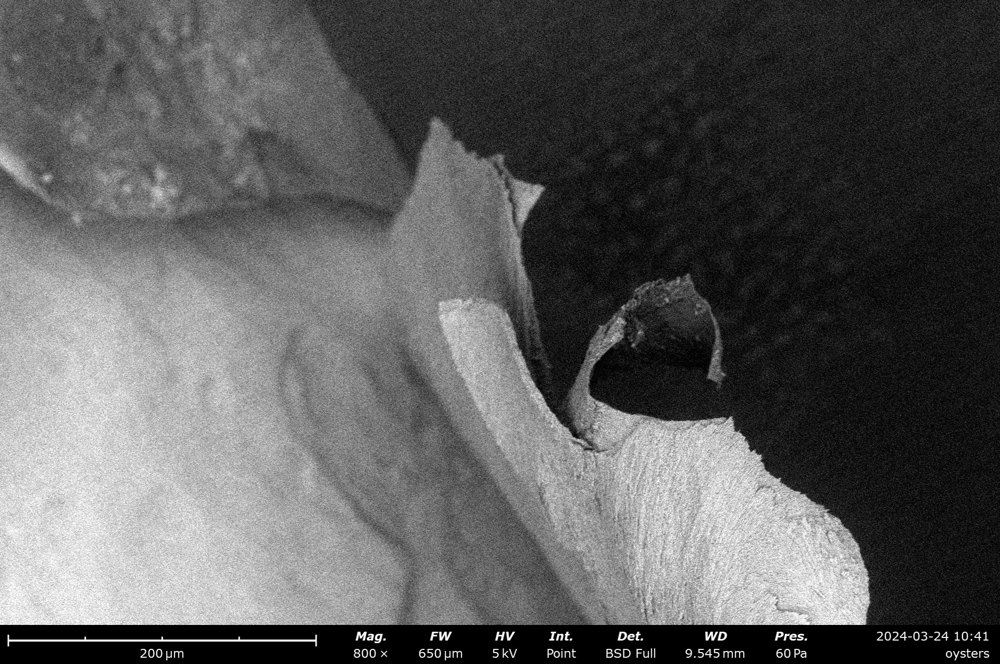

Back
The Achilles' Heel of Calcifying Organisms
March 2024
Stop-motion animation
3'43"
As part of the Vis-a-thon program hosted by the Edna W. Lawrence Nature Lab at RISD,
this is a collaborative project between me and Oceanography scientist Hongjie Wang.
Within in 48 hours, we made this short film that recreate an experiment that visualizes the effect of
Ocean Acidification to shell creatures.
With grocery items and oystershells, we conducted and documented the experiment, and turned it into a children-friendly video. We hope that this video will provide middle school and high school teachers with a simpler and more visual way to explain the dangers of ocean acidification to their students, and that students will be able to refer to this video to conduct the experiment themselves at home.
Behind the Scenes
Initial brainstorming
Production Set
Oyster shells before/after the experiment
Using blueberry skins to reveal the pH of liquids


Scanning Electron Microscope (SEM) photos we took at the RISD Nature lab.
With grocery items and oystershells, we conducted and documented the experiment, and turned it into a children-friendly video. We hope that this video will provide middle school and high school teachers with a simpler and more visual way to explain the dangers of ocean acidification to their students, and that students will be able to refer to this video to conduct the experiment themselves at home.
Behind the Scenes
Initial brainstorming


Production Set


Oyster shells before/after the experiment


Using blueberry skins to reveal the pH of liquids
Scanning Electron Microscope (SEM) photos we took at the RISD Nature lab.

